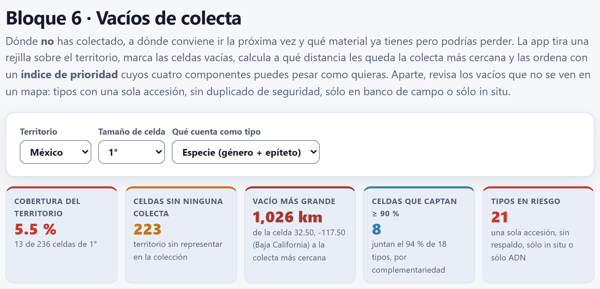
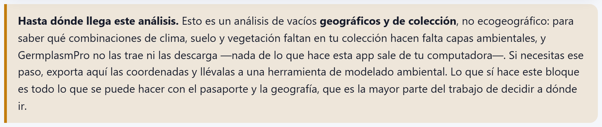
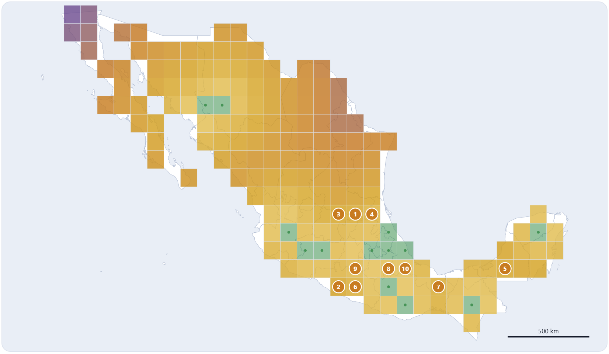
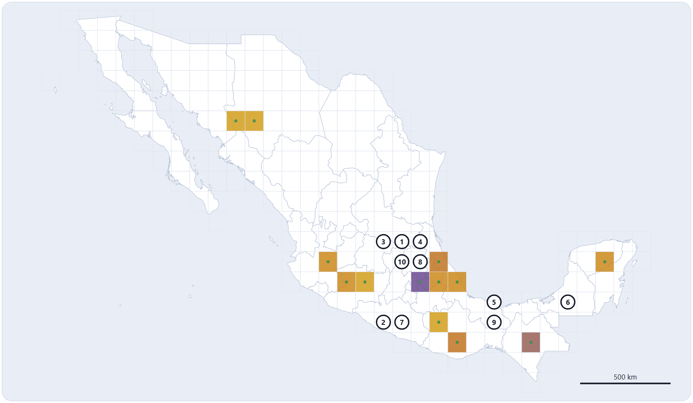
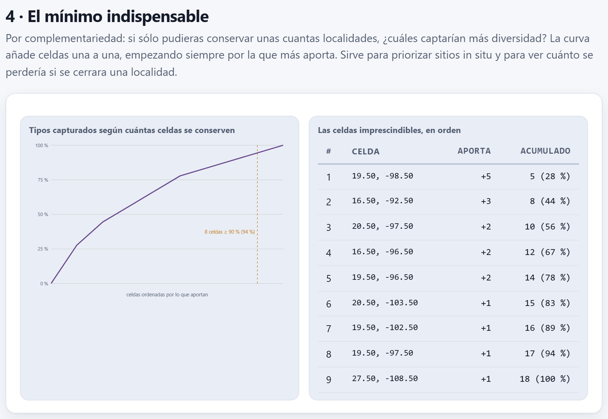

Vacíos de colecta
El Bloque 5 midió lo que la colección guarda; el Bloque 6 mira lo que le falta. Tira una rejilla sobre el territorio, marca las celdas sin ninguna colecta y las ordena con un índice de prioridad cuyos cuatro componentes ves y puedes pesar a tu gusto, para que la próxima salida al campo vaya a donde más rinde. Aparte, revisa los huecos que no se ven en un mapa —tipos con una sola accesión, sin duplicado de seguridad, sólo en banco de campo, sólo in situ o sólo como ADN— y busca el conjunto mínimo de localidades que reúne toda la diversidad. Todo sale del pasaporte y de la geografía: es un análisis geográfico y de colección, no ecogeográfico.
- 6.1El territorio, la rejilla y el resumen del bloque
- 6.2El mapa de lo que falta
- 6.3El índice de prioridad, componente por componente
- 6.4Mover los pesos: qué buscas en la próxima salida
- 6.5La ruta de colecta para el GPS
- 6.6Lo que ya tienes y puedes perder
- 6.7El mínimo indispensable: complementariedad
- 6.8Cómo cambia todo con la celda, el territorio y el tipo
6.1El territorio, la rejilla y el resumen del bloque
Un vacío de colecta es una parte del territorio, o de la diversidad de un cultivo, que la colección no tiene. El Bloque 6 los busca con lo que ya está en el pasaporte (capítulo 2): las coordenadas, la especie, la ruta de conservación y el duplicado de seguridad. Al entrar, o al cambiar cualquier selector, recalcula todo con la espera animada Buscando vacíos de colecta. Si no hay accesiones, el bloque dice Primero carga tus accesiones en el Bloque 2.

Tres selectores gobiernan el análisis; los demás controles están dentro de cada sección.
| Selector | Opciones y qué hacen |
|---|---|
| Territorio | México: la rejilla conserva las celdas que tocan tierra de alguna entidad. El mundo: las que tocan tierra de algún país, entre los 60° de latitud sur y los 84° norte; el déficit del índice se calcula entonces por país (apartado 6.8). |
| Tamaño de celda | 0.5°, 1° o 2°. Las celdas se trazan igual que en los Bloques 4 y 5: cuadros alineados con los meridianos y paralelos múltiplos del tamaño. |
| Qué cuenta como tipo | Especie (género + epíteto), Cultivo, Género o Nombre de la accesión, con el mismo criterio que el Bloque 5 (tabla 5.1). Decide qué es «riqueza», qué es «exclusivo» y qué tipos se revisan en la sección 3. Un dato vacío no cuenta como tipo en este bloque. |
Los cinco recuadros resumen el resultado. Con la colección de ejemplo:
| Recuadro | Ejemplo | Qué dice |
|---|---|---|
| Cobertura del territorio | 5.5 % | La proporción de celdas con al menos una colecta: 13 de 236 celdas de 1°. Por debajo de 25 % la cifra va en rojo. |
| Celdas sin ninguna colecta | 223 | Las celdas vacías: el territorio que la colección no representa (apartado 6.2). |
| Vacío más grande | 1 026 km | La mayor distancia de una celda vacía a la colecta más cercana; debajo, qué celda es: 32.50, −117.50, en Baja California. |
| Celdas que captan ≥ 90 % | 8 | Cuántas celdas, escogidas por complementariedad, bastan para reunir al menos el 90 % de los tipos; debajo, cuánto juntan de verdad (94 %) y el total de tipos dentro del territorio (18; apartado 6.7). |
| Tipos en riesgo | 21 | Los tipos cuyo riesgo suma 3 puntos o más: una sola accesión, sólo in situ, sólo como ADN, o sin duplicado junto con otra señal (apartado 6.6). |
Junto al selector Pintar del mapa, la app avisa cuántas accesiones quedan fuera del área analizada. Con el territorio en México son 9: los dos maíces de Guatemala, las dos papas del Perú, la oca de Bolivia, la cebada de Etiopía, el amaranto de la India, la yuca de Colombia y el maíz Tuxpeño de la costa, cuya longitud sin signo lo manda a Birmania. Entran las otras 36 de las 45 accesiones con coordenadas; la que no tiene coordenadas (MEX-ZM-0043) no entra a ningún cálculo geográfico, aunque sí a la sección 3.
Un análisis ecogeográfico, como el de Ramírez-Villegas et al. (2010), pregunta qué combinaciones de clima, suelo y vegetación faltan en la colección; para eso hacen falta capas ambientales, y GermplasmPro no las trae ni las descarga, porque nada de lo que hace sale de tu computadora. El Bloque 6 responde con lo que dan el pasaporte y la geografía: dónde no hay colectas, qué tan lejos queda la más cercana, qué hay alrededor y qué tipos dependen de una sola accesión. Lo dice la nota del pie del panel (figura 6.2). Si necesitas el paso ambiental, exporta la ruta del apartado 6.5 y llévala a una herramienta de modelado; la franja altitudinal (apartado 6.6) es la única variable de ambiente que el bloque mira.

6.2El mapa de lo que falta
La sección 1 · El mapa de lo que falta dibuja la rejilla sobre los contornos del Bloque 4 (capítulo 4). Cada cuadro es una celda que toca tierra del territorio o que contiene alguna accesión. Las celdas con colectas van en verde y con un punto en su centro; las vacías se pintan según el selector Pintar, y diez círculos blancos con borde y número oscuros marcan las diez primeras prioridades del índice (apartado 6.3). Si dos círculos quedarían encimados, uno se aparta y una línea lo une con su celda.
![La sección 1: el selector Pintar en prioridad de colecta, la nota 9 accesiones caen fuera del área analizada y el mapa de México cubierto de celdas de 1 grado, también las de la costa y las islas; la mayoría en ocre, las del centro y sur más oscuras, trece celdas verdes con un punto y diez círculos blancos numerados: 3, 1 y 4 en la franja de 21.5 grados norte, 10 y 8 debajo de ellos en Hidalgo, 2 y 7 en Guerrero, 5 y 9 en el sur de Veracruz y 6 en Campeche; abajo, la leyenda celda con colectas, prioridad numerada y la rampa puntos de prioridad de la celda vacía, mínimo 32, máximo 87](../img/b6-mapa.png)
Abajo a la derecha va una barra de escala en kilómetros, con el mismo criterio que en el Bloque 4 (apartado 4.2): sola en México, con la latitud en que vale si el encuadre es alto y, en el mundo entero, sustituida por el aviso Sin barra de escala: varía con la latitud. Al pasar el puntero sobre una celda, una etiqueta dice su centro y, si está vacía, la distancia a la colecta más cercana y sus puntos de prioridad (por ejemplo, 29.50, -118.50 · vacía · 976 km · 60 pts, la celda de la isla Guadalupe); si está ocupada, cuántas accesiones y tipos tiene. La leyenda cambia con el modo: dice qué mide la rampa y escribe su mínimo y su máximo.
| Pintar | Qué colorea la rampa |
|---|---|
| prioridad de colecta (de fábrica) | puntos de prioridad de la celda vacía, de 32 a 87; la más oscura es la de más puntos. Las ocupadas, en verde. |
| distancia al vecino más cercano | km de la celda vacía a la colecta más cercana, de 59 a 1 026: claras junto a las colectas, moradas en los extremos (figura 6.4). |
| riqueza de las celdas ocupadas | tipos por celda ocupada, de 1 a 5; las vacías quedan sin color y la leyenda lo dice (figura 6.5). |


El mapa se exporta con el botón Mapa en SVG (apartado 6.5) y, como los demás mapas, se puede abrir en el estudio de figuras (apartado I.6). Para los lectores de pantalla, el mapa y la curva de la sección 4 llevan una descripción con sus cifras principales.
Con celdas de tamaño t grados, una accesión de longitud λ y latitud φ cae en la celda de índices i = ⌊λ / t⌋ y j = ⌊φ / t⌋, cuyo centro es ((i + ½)t, (j + ½)t). Para saber si la celda es del territorio, la app no mira sólo su centro: prueba una cuadrícula de 5 × 5 = 25 puntos repartidos en ella (con El mundo, 9 puntos con 1° y 2°, y 4 con 0.5°) y se queda con las celdas donde alguno cae en tierra. La fracción de puntos que cae en cada entidad es su parte de tierra en la celda. Así existen las celdas de costa cuyo centro cae en el mar, y una entidad más chica que la celda tiene igualmente su celda: si ninguna muestra la toca, la app la ancla a la celda de un punto interior suyo. Las 32 entidades tienen al menos una celda con cualquier tamaño.
La distancia de una celda vacía a la colecta más cercana es la menor distancia de gran círculo (haversine, apartado 3.5) entre su centro y todas las accesiones con coordenadas, incluidas las que quedan fuera del área.
Cada accesión cuenta en la entidad donde cae su propio punto, no en la del centro de su celda. En el ejemplo, la celda 19.50, −98.50 la comparten el Estado de México (32 % de su tierra), Hidalgo, Puebla (24 % cada uno) y Tlaxcala (20 %); sus seis accesiones cuentan cuatro para Puebla y dos para el Estado de México, que es donde se colectaron. Una accesión que cae en el mar junto a la costa cuenta en su celda, que existe aunque su centro también caiga en el mar. Con el territorio en México, sólo queda fuera la que cae en otro país.
6.3El índice de prioridad, componente por componente
No todas las celdas vacías valen lo mismo para la próxima salida. La sección 2 · A dónde ir la próxima vez les da un puntaje que suma cuatro componentes, cada uno escalado entre 0 y 1 y multiplicado por su peso. Los pesos de fábrica suman 100, así que el puntaje va de 0 a 100.
Lejanía (wd = 40): la distancia d a la colecta más cercana, con techo en 250 km —más lejos, el territorio es igual de desconocido— y dividida entre la mayor distancia de las celdas vacías (también con techo). Riqueza del vecindario (wr = 25): Rv, los tipos distintos en el vecindario de la celda (con 1°, el cuadro de 5 × 5 celdas centrado en ella), entre el mayor Rv de la rejilla. Tipos exclusivos cerca (wx = 15): Xv, los tipos del vecindario que sólo están en una celda de toda la rejilla, entre el mayor Xv.
Déficit de la entidad (we = 20). La densidad de colecta de una entidad es ρe = accesiones cuyo punto cae en ella ÷ su superficie en km²; su déficit, δe = 1 − ρe / ρmáx: la entidad mejor cubierta vale 0 y las que no tienen nada valen 1. Una celda que comparten varias entidades toma el promedio de sus déficits pesado por la parte de tierra de cada una:
El vecindario son las celdas a unos 220 km o menos hacia cada lado, sea cual sea el tamaño de celda: 2 celdas con 1°, 4 con 0.5° y 1 con 2°. La sección lo dice: unos 220 km o menos (2 celdas de 1° hacia cada lado). A igual puntaje va primero la celda con más riqueza alrededor; si sigue el empate, la más lejana, y después la más al norte y la más al oeste.
![La sección 2: cuatro deslizadores, cada uno con su nombre arriba y su valor a la derecha: Lejanía de la colecta más cercana 40 (40 %), Riqueza del vecindario 25 (25 %), Déficit de la entidad 20 (20 %) y Tipos exclusivos cerca 15 (15 %); la tabla con las diez primeras celdas: 1, 21.500, −99.500, San Luis Potosí +3, 228 km, riqueza 9, 87 puntos; 2, 17.500, −100.500, Guerrero, 254 km, 7, 83; 3, Guanajuato +1, 250 km, 7, 83; 4, Veracruz +2, 170 km, 10, 79; 5, 18.500, −94.500, Veracruz, 261 km, 8, 77; hasta la 10, 20.500, −99.500, Hidalgo +2, 127 km, 9, 70; cada fila con una barra de cuatro colores; debajo, la leyenda y los botones Ruta de colecta en CSV y Mapa en SVG](../img/b6-prioridades.png)
La tabla trae las 25 celdas de más puntos. Sus columnas son el número de prioridad, el Centro de la celda (latitud, longitud, con tres decimales), la Entidad con más tierra en la celda —seguida de «+n» si toca otras, que se ven al pasar el puntero (También toca: Querétaro, Hidalgo, Guanajuato)—, la distancia Al vecino más cercano, la Riqueza cerca (Rv), los Puntos redondeados a entero y, en Por qué, una barra que reparte el puntaje entre los cuatro componentes con sus colores: morado la lejanía, verde la riqueza, ocre el déficit y magenta los exclusivos. La barra lleva también el desglose en texto, para los lectores de pantalla, y la tabla se recorre con el teclado.
Es una celda de San Luis Potosí (56 % de su tierra) que también toca Querétaro, Hidalgo y Guanajuato. Su vecindario de 5 × 5 celdas (de −101.5° a −97.5° de longitud y de 19.5° a 23.5° de latitud) contiene cuatro celdas ocupadas: la de 19.50, −98.50 con 6 accesiones y 5 especies, una de Puebla con 2 (maíz y tomate de cáscara), una de Veracruz con 3 (calabaza, vainilla y maíz) y una de Michoacán con 1 frijol.
| Lejanía: la accesión más cercana es MEX-ZP-0012, en 19.5523, −98.8155: Δφ = 1.948° ≈ 216.6 km, Δλ·cos φ ≈ 71.3 km → d = 228.0 km | |
| dmáx = 1 026 km > 250 → 40 × 228.0 / 250 = 40 × 0.912 = 36.48 | |
| Riqueza: Rv = 9 especies (12 accesiones); Rmáx = 12 → 25 × 9/12 = 18.75 | |
| Déficit: las cuatro entidades que toca no tienen accesiones → δ = 1 → 20 × 1 = 20 | Exclusivos: Xv = 4 + 1 + 2 = 7; Xmáx = 9 → 15 × 7/9 = 11.67 |
| P = 36.48 + 18.75 + 20 + 11.67 = 86.90 → la tabla escribe 87 | |
Los siete exclusivos son las cuatro especies propias de la celda 19.50, −98.50 (Cucurbita pepo, Amaranthus hypochondriacus, Triticum aestivum y Cucurbita argyrosperma), el tomate de cáscara de Puebla y la calabaza (C. moschata) y la vainilla de Veracruz. Las celdas que alcanzan Rmáx = 12 y Xmáx = 9 son tres vacías de la franja de 18.5° de latitud, entre Puebla y Oaxaca, que tienen en su vecindario casi toda la colección del centro del país.
Cómo se lee. Las tres primeras celdas están a unos 230 a 250 km de cualquier colecta y en entidades sin ninguna accesión, pero con un vecindario rico: es territorio desconocido junto a una zona diversa, el caso típico en que vale la pena ir. La octava, 20.50, −98.50, en Hidalgo, está a sólo 110 km de una colecta, pero rodeada de 10 especies y 9 exclusivos: sube por la riqueza, no por la lejanía, y su barra lo muestra con más verde y magenta que morado. Las 223 celdas vacías van de 86.90 puntos a 31.83, la de 16.50, −97.50, en Oaxaca, al final de la lista.
Puebla es la mejor cubierta: 7 accesiones en 34 689 km², 2.02 por cada 10 000 km², así que su déficit es 0. Las demás se miden contra ella: Estado de México 0.548 (2 accesiones), Veracruz 0.582 (6), Oaxaca 0.626 (7), Chiapas 0.732 (4), Yucatán 0.743 (2), Michoacán 0.749 (3), Jalisco 0.877 (2), Chihuahua 0.960 (2) y Sonora 0.973 (1); las 22 entidades restantes, Tlaxcala incluida, no tienen accesiones y valen 1. La celda 21.50, −98.50, la cuarta de la lista, es 48 % Veracruz, 32 % San Luis Potosí y 20 % Hidalgo: δ = 0.48 × 0.582 + 0.32 + 0.20 = 0.799, y su déficit aporta 20 × 0.799 = 15.99 puntos.
6.4Mover los pesos: qué buscas en la próxima salida
Los cuatro deslizadores van de 0 a 60 en pasos de 5. Encima de cada uno va su nombre, y a su derecha el peso y, entre paréntesis, la parte que representa del total: con los pesos de fábrica, 40 (40 %), 25 (25 %), 20 (20 %) y 15 (15 %). El cálculo se rehace al soltar el deslizador. Los pesos no necesitan sumar 100: si subes uno a 60, los puntos pueden pasar de 100 y los porcentajes se reparten de nuevo.
| Peso subido a 60 | Primeras cinco celdas (puntos) |
|---|---|
| Ninguno (de fábrica) | San Luis Potosí 86.9 · Guerrero 82.9 · Guanajuato 82.9 · Veracruz (21.50, −98.50) 79.0 · Veracruz (18.50, −94.50) 76.6 |
| Lejanía (60, 50 %) | San Luis Potosí 105.1 · Guerrero 102.9 · Guanajuato 102.9 · Veracruz (18.50, −94.50) 96.6 · Campeche 95.1 |
| Riqueza del vecindario (44 %) | San Luis Potosí 113.1 · Veracruz (21.50, −98.50) 108.1 · Guerrero 103.3 · Guanajuato 103.3 · Veracruz (18.50, −94.50) 100.0 |
| Déficit de la entidad (43 %) | San Luis Potosí 126.9 · Guerrero 122.9 · Guanajuato 122.9 · Campeche 115.2 · Guerrero (17.50, −99.50) 114.7 |
| Tipos exclusivos cerca (41 %) | Veracruz (21.50, −98.50) 124.0 · San Luis Potosí 121.9 · Hidalgo (20.50, −98.50) 115.2 · Veracruz (21.50, −97.50) 111.2 · Veracruz (18.50, −96.50) 109.7 |
La celda de San Luis Potosí aparece en todas: es lejana, vecina de una zona rica y de entidades sin accesiones, así que ningún peso razonable la saca. Es la conclusión robusta. Subir los exclusivos acerca la lista al centro del país, a celdas vacías entre colectas diversas, donde es probable encontrar más de lo mismo bueno; subir la lejanía o el déficit la empuja hacia territorio sin explorar, como Campeche o el istmo.
Si dejas sólo la lejanía (los otros tres en 0), las 127 celdas vacías a 250 km o más empatan con 60 puntos, porque el techo las iguala; las ordena el desempate —más riqueza alrededor, luego más lejana—, que pone primero 18.50, −94.50, en el sur de Veracruz. Combina siempre al menos dos componentes. Si pones los cuatro en 0, la app no inventa un orden: en lugar de la tabla escribe Todos los pesos están en cero. Sin nada que pesar no hay índice de prioridad, y ordenar las celdas así sería inventar un ranking: sube al menos uno de los cuatro deslizadores., los porcentajes quedan en 0 % y el botón del CSV se desactiva.
6.5La ruta de colecta para el GPS
Debajo de la tabla de prioridades van dos botones (figura 6.6):
- Ruta de colecta en CSV guarda prioridades-colecta.csv, en UTF-8 con marca de orden de bytes (para que una hoja de cálculo lea bien los acentos), con hasta 200 celdas vacías ordenadas por prioridad; con la colección de ejemplo, las 200 primeras de las 223. Las coordenadas del centro van con cuatro decimales, listas para cargarlas en un GPS o en una hoja de ruta.
- Mapa en SVG guarda vacios-colecta.svg, el mapa en el modo de pintado que tengas elegido, con los colores del tema claro.
| orden | latitud | longitud | entidad | pais | km_al_vecino | riqueza_vecindario | accesiones_vecindario | exclusivos_cerca | puntos | celda_grados |
|---|---|---|---|---|---|---|---|---|---|---|
| 1 | 21.5 | -99.5 | San Luis Potosí | MEX | 228 | 9 | 12 | 7 | 86.9 | 1 |
| 2 | 17.5 | -100.5 | Guerrero | MEX | 254 | 7 | 9 | 5 | 82.9 | 1 |
| 3 | 21.5 | -100.5 | Guanajuato | MEX | 250 | 7 | 9 | 5 | 82.9 | 1 |
El CSV trae tres columnas que la pantalla no muestra: pais (el código ISO alfa-3), accesiones_vecindario y exclusivos_cerca (Xv); los puntos van con un decimal y la distancia en kilómetros enteros. La columna entidad es la de más tierra en la celda. No guarda los pesos ni el tamaño de celda más que en celda_grados: anota con qué pesos lo obtuviste.
El centro de una celda es un punto de referencia, no un sitio de colecta: con celdas de 1°, el cuadro mide unos 110 km de lado y su centro puede caer en un cerro, en una presa, en una zona urbana o, en las celdas de orilla, en el mar. Úsalo para planear la ruta y elige en campo, dentro del cuadro, los sitios donde sí está el cultivo o la especie silvestre que buscas.
6.6Lo que ya tienes y puedes perder
La sección 3 · Lo que ya tienes y puedes perder revisa los vacíos que no se ven en un mapa. No mira el territorio, sino cada tipo de la colección —las 46 accesiones, tengan o no coordenadas— y le pone etiquetas de riesgo según cuántas accesiones tiene, por qué rutas se conserva y si tiene duplicado de seguridad.
| Etiqueta | Peso | Cuándo aparece |
|---|---|---|
| una sola accesión | 3 | El tipo tiene una sola accesión en todo el pasaporte. |
| sólo in situ, sin respaldo ex situ | 3 | Todas sus accesiones están en reserva genética o en conservación en la parcela. |
| sólo como ADN: no regenera planta | 3 | Tiene banco de ADN, pero ninguna ruta de la que se pueda regenerar una planta (semillas, campo, in vitro o criopreservación), con o sin registros in situ. |
| sin duplicado de seguridad | 2 | Ninguna de sus accesiones tiene en DUPLSITE una institución distinta de la que la conserva (la misma regla de la validación del Bloque 2, apartado 2.6). |
| sólo en banco de campo | 2 | De las rutas que regeneran planta, la única que tiene es el banco de campo o colección viva. |
| sin coordenadas | 1 | Ninguna de sus accesiones tiene coordenadas. |
| todo de una sola entidad o país | 1 | Tiene varias accesiones, pero todas caen en la misma entidad de México o en el mismo país. |
La ruta de cada accesión es la de GP_CONS o, si falta, la que se deduce de STORAGE (capítulo 2). La columna Entidades o países cuenta dónde cae el punto de cada accesión: la entidad si cae en México, el país si cae en otro lado (o el de ORIGCTY si cae en el mar). La tabla ordena los tipos de mayor a menor riesgo sumado, a igual riesgo de menos a más accesiones y luego por orden alfabético. El peso no se ve en la tabla: se adivina por el orden y por los colores, rojo para las etiquetas graves y ocre para las demás. Si hay más de 40 tipos con alguna etiqueta, la tabla muestra los 40 más graves y lo dice (Se muestran 40 de 45 tipos con algún riesgo…). El nombre del tipo va en cursiva sólo cuando el tipo es especie o género. El recuadro Tipos en riesgo cuenta los que suman 3 o más.
![La sección 3: la tabla de tipos en riesgo con las columnas Tipo, Accesiones, Entidades o países, Rutas y Riesgos; Quercus crassifolia, 1 accesión, 1, Reserva genética (in situ), con una sola accesión, sin duplicado de seguridad y sólo in situ; Agave angustifolia, Coffea arabica, Oxalis tuberosa y Theobroma cacao, 1, 1, Banco de campo o colección viva, con una sola accesión, sin duplicado y sólo en banco de campo; Amaranthus caudatus, 1, 1, Banco de semillas, una sola accesión y sin duplicado; el botón Tipos en riesgo en CSV y la nota Franjas altitudinales sin nada: entre 0 y 4,000 m hay una franja de 500 m sin ninguna accesión: 3,000–3,500 m; se dejó fuera 1 altitud imposible; corrígela en la ficha de la accesión, en el Bloque 2](../img/b6-riesgos.png)
Cómo se lee para decidir. Cada etiqueta sugiere una acción distinta: una sola accesión pide volver a colectar o pedir otra muestra; sin duplicado de seguridad, enviar una copia a otra institución (Bloque 8, capítulo 8); sólo en banco de campo, un respaldo in vitro o en criopreservación, porque una plaga o una helada se lleva la colección viva entera; sólo in situ, un respaldo ex situ, porque la población depende de que la reserva o la parcela sigan existiendo; sólo como ADN, conseguir material vivo, porque del ADN no se regenera la planta.
El botón Tipos en riesgo en CSV guarda tipos-en-riesgo.csv con todos los tipos que tienen alguna etiqueta —22 en el ejemplo, aunque la tabla se corte en 40—, con las columnas tipo, accesiones, entidades_o_paises, rutas (con su nombre, como en la tabla), duplicados, con_coordenadas, riesgos y peso. Es la lista de trabajo para el Bloque 8.
| Quercus crassifolia: 1 accesión, sólo en reserva genética, sin duplicado → 3 + 3 + 2 = 8, la primera de la lista | |
| Theobroma cacao: 1 accesión, sólo en banco de campo, sin duplicado → 3 + 2 + 2 = 7 | |
| Sechium edule: 3 accesiones, sólo en banco de campo, sin duplicado, todas en Veracruz («todo de una sola entidad o país») → 2 + 2 + 1 = 5 | |
| Phaseolus vulgaris: 2 accesiones, en semillas y en la parcela, sin duplicado → 2: aparece en la tabla, pero no cuenta como «en riesgo» |
De las 24 especies, 22 tienen al menos una etiqueta y 21 suman 3 o más. Sólo el maíz (18 accesiones, 10 con duplicado, en 9 entidades o países) y el chile (3 accesiones, 2 con duplicado) quedan sin ninguna. El encino es el caso más frágil: una bellota recalcitrante, conservada sólo en una reserva, sin copia en otra institución.
Las franjas altitudinales sin nada
Debajo de la tabla, si hace falta, va una nota con las franjas de altitud intermedias sin ninguna accesión. La app reparte en franjas de 500 m —siempre 500, sin importar el selector del Bloque 5— las altitudes de las accesiones mapeadas, desde la franja de la más baja hasta la de la más alta, y lista las que quedaron vacías. Deja fuera las altitudes imposibles, por debajo de −500 m o por encima de 7 000 m (el mismo intervalo del Bloque 5), para que una sola altitud mal capturada no invente decenas de franjas vacías; hacen falta al menos tres altitudes válidas.
Con la colección de ejemplo entran 44 altitudes, de 20 a 3 797 m (franjas de 0 a 4 000 m), y la nota dice que hay una franja de 500 m sin ninguna accesión: 3,000–3,500 m; añade Se dejó fuera 1 altitud imposible; corrígela en la ficha de la accesión, en el Bloque 2: los 25 000 m del frijol tépari. Es la misma franja que faltaba en el gradiente del Bloque 5 (apartado 5.8). La franja intermedia vacía es un vacío ambiental grueso, el único que el bloque puede ver sin capas de clima: ninguna accesión está entre 3 000 y 3 500 m, entre la papa de 2 997 m y la papa amarga de 3 797 m, ambas del Perú. Es el piso de la papa y de los tubérculos andinos, y la colección lo salta.
6.7El mínimo indispensable: complementariedad
La sección 4 · El mínimo indispensable responde una pregunta distinta: si sólo pudieras conservar —o volver a visitar— unas cuantas localidades, ¿cuáles reunirían más diversidad? A la izquierda, la curva Tipos capturados según cuántas celdas se conserven; a la derecha, la tabla Las celdas imprescindibles, en orden, con la celda, lo que Aporta y el Acumulado en tipos y en porcentaje (hasta 20 filas).
Se parte de todas las celdas ocupadas y del conjunto de tipos que reúnen. En cada paso se elige la celda que añade más tipos que todavía no están cubiertos —no la más rica, sino la que más complementa a las ya elegidas—; si dos empatan, gana la que tiene más tipos en total y, si siguen empatadas, la que va primero en la rejilla. Sus tipos se marcan como cubiertos y se repite hasta cubrirlos todos. Las celdas que no añaden nada no entran en la lista. El método voraz no garantiza el mínimo exacto, pero suele quedarse a una celda de él y es el que se usa para elegir reservas.

El total es 18 y no 24 porque, con el territorio en México, sólo cuentan las celdas de México: las seis especies que sólo están fuera —las dos papas, la oca, la cebada, el amaranto andino y la yuca— no entran. Con el territorio en El mundo entran las 24 y hacen falta 15 celdas para cubrirlas; con 13 se junta el 92 % (apartado 6.8).
Cómo se lee. Una curva que sube despacio y casi en línea recta, como ésta, dice que cada localidad guarda algo propio: no hay redundancia, y cerrar cualquiera de las nueve celdas le quita a la colección al menos una especie. Si la curva llega pronto al 90 %, unas pocas localidades bastan y las demás son respaldo. La complementariedad sólo usa presencias, no cuántas accesiones hay: una celda con un solo sobre de un tipo exclusivo vale tanto como una con veinte.
| 1. 19.50, −98.50 (Puebla y Estado de México): Zea mays, Cucurbita pepo, amaranto, trigo, C. argyrosperma → +5 = 5 de 18 | |
| 2. 16.50, −92.50 (Chiapas): ayocote, cacao, encino (el maíz ya está) → +3 = 8 | |
| 3–5. 20.50, −97.50: C. moschata y vainilla · 16.50, −96.50: frijol y chile · 19.50, −96.50: café y chayote → +2 cada una = 14 | |
| 6–9. agave · aguacate · tomate de cáscara · frijol tépari → +1 cada una = 18 (100 %) |
Las celdas 3 y 4 empatan en todo (aportan 2 y tienen 3 especies); gana la primera de la rejilla. Las cuatro celdas restantes de las 13 ocupadas —la de los maíces de Chihuahua, la de Oaxaca con 3 maíces, la de Yucatán y la del frijol de Michoacán— no aportan nada que las otras no tengan. Con 7 celdas se llega a 16 de 18 tipos (89 %); con 8, a 17 (94 %): por eso el recuadro dice 8 y «juntan el 94 %».
6.8Cómo cambia todo con la celda, el territorio y el tipo
Todo lo anterior depende de los tres selectores de la cabecera. Con la colección de ejemplo:
| Territorio · celda | Celdas | Ocupadas | Cobertura | Vacío mayor | ≥ 90 % | Fuera | Primera prioridad |
|---|---|---|---|---|---|---|---|
| México · 0.5° | 831 | 18 | 2.2 % | 1 143 km | 10 de 18 | 9 | 21.25, −98.75 (Hidalgo), 83.6 |
| México · 1° | 236 | 13 | 5.5 % | 1 026 km | 8 de 18 | 9 | 21.50, −99.50 (San Luis Potosí), 86.9 |
| México · 2° | 69 | 11 | 15.9 % | 1 021 km | 7 de 18 | 9 | 17, −101 (Guerrero), 82.9 |
| El mundo · 1° | 17 012 | 21 | 0.1 % | 10 581 km | 13 de 24 | 0 | −13.50, −69.50 (Perú), 69.6 |
| El mundo · 2° | 4 549 | 18 | 0.4 % | 10 640 km | 11 de 24 | 0 | −13, −69 (Perú), 69.8 |
La celda fina reparte la colección en más cuadros, deja menos territorio «cubierto» y separa colectas que la gruesa junta; la gruesa da una cobertura más optimista. Las nueve accesiones fuera del área son las mismas con cualquier tamaño: las de otros países. Como el vecindario se mide en kilómetros (unos 220 km hacia cada lado), el índice da casi lo mismo con cualquier tamaño: las primeras celdas caen en la misma zona, entre la Huasteca, el norte de Guerrero y el Bajío. Con 0.5°, las cinco primeras son Hidalgo (21.25, −98.75) 83.6 · Guerrero (17.75, −100.25) 82.0 · Guanajuato (21.25, −100.25) 81.2 · Querétaro (21.25, −99.25) 79.4 · Hidalgo (20.75, −98.75) 77.2, y la rampa va de 25 a 84 puntos; con 2°, Guerrero (17, −101) 82.9 · Hidalgo (21, −99) 82.5 · Veracruz (19, −95) 81.1 · Guanajuato (21, −101) 76.8 · Campeche (19, −91) 75.4, con la rampa de 42 a 83. La celda fina afina el lugar; la gruesa da menos celdas y más fáciles de recorrer.
![El mapa de vacíos con el territorio en El mundo y celdas de 2 grados: todos los continentes, salvo la Antártida, cubiertos de celdas casi del mismo tono rojizo; alrededor de México, de los Andes centrales y del norte de la India, celdas ocres y amarillas; dieciocho celdas ocupadas en México, Guatemala, Colombia, Perú, Bolivia, Etiopía, India y Birmania; los círculos de prioridad 1, 3 y 10 en Perú y Bolivia, 2 y 4 en México y 5 a 9 en el norte de la India, apartados con una línea hasta su celda; la rampa de 24 a 70 puntos y, en lugar de la barra de escala, el aviso Sin barra de escala: varía con la latitud](../img/b6-mundo.png)
Con El mundo, el déficit se calcula por país, con la misma densidad por superficie: Guatemala, con 2 accesiones en poco territorio, es el mejor cubierto (0) y México queda casi igual (0.004); Perú vale 0.917, Birmania 0.921, Bolivia 0.950, Etiopía 0.952, Colombia 0.953 y la India 0.983, y los países sin accesiones, 1. Por eso la primera prioridad pasa al sur del Perú, cerca de las papas: −13.50, −69.50 con 69.6 puntos con celdas de 1°, y −13, −69 con 69.8 con celdas de 2°. La tabla dice el País en lugar de la entidad, y el deslizador se llama Déficit del país. La cobertura y el vacío mayor dejan de ser útiles —el vacío mayor, a 10 581 km, está en Nueva Zelanda, y la tarjeta lo dice—; este territorio sirve para la complementariedad de una colección internacional, donde entran las 24 especies, y para planear salidas fuera de México filtrando la ruta del CSV por la columna pais.
El tipo cambia la riqueza, los exclusivos, la complementariedad y la sección 3, pero no la rejilla ni la cobertura. Con Género hay 14 tipos en México, 6 celdas juntan al menos el 90 % y 12 tipos están en riesgo; con Cultivo, 18 tipos, 8 celdas y 17 en riesgo; con Nombre de la accesión, 35 nombres, 11 celdas y 45 en riesgo, porque casi cada accesión es un tipo con una sola accesión. En ese modo la tabla de riesgos avisa que muestra 40 de 45, y los nombres van sin cursiva.
Cuando algo no sale
| Lo que ves | Por qué pasa y qué hacer |
|---|---|
| Primero carga tus accesiones en el Bloque 2. | No hay pasaporte. Carga tu colección o la de ejemplo (capítulo 2). |
| N accesiones caen fuera del área analizada | Con el territorio en México, sus puntos caen en otro país, por un error o porque son de fuera. Revisa las coordenadas en el Bloque 3 o cambia el territorio a El mundo. |
| Junto a la entidad aparece «+2» | La celda toca otras dos entidades; pasa el puntero para ver cuáles. La celda se rotula con la de más tierra y su déficit mezcla los de todas. |
| Muchas celdas con los mismos puntos | Todo el peso está en un solo componente: con sólo la lejanía, las celdas a 250 km o más empatan, y con sólo el déficit, las de entidades sin accesiones. Combina al menos dos pesos (apartado 6.4). |
| Todos los pesos están en cero… | Los cuatro deslizadores están en 0. Sube al menos uno: vuelven la tabla y el CSV. |
| hacen falta más celdas con colectas en la sección 4 | Menos de dos celdas aportan tipos: no hay curva que trazar. Usa una celda más fina o el territorio El mundo. |
| Un tipo aparece «en riesgo» aunque sabes que tiene copia | Falta DUPLSITE, o dice la misma institución que INSTCODE. Complétalo en el Bloque 2. |
| Se muestran 40 de N tipos con algún riesgo | Hay más de 40 tipos con etiquetas; la tabla muestra los más graves. Guarda el CSV para verlos todos. |
| La nota de franjas dice que dejó fuera altitudes imposibles | Hay altitudes menores de −500 m o mayores de 7 000 m. Corrígelas en la ficha de la accesión, en el Bloque 2. |
| Si vas a planear una salida de colecta | entonces corrige antes las coordenadas (Bloque 3): un signo perdido mueve una accesión fuera del territorio y abre un vacío que no existe. |
| Si una celda queda arriba con los pesos de fábrica y con cada peso subido | entonces es una prioridad robusta: ponla en la ruta. |
| Si buscas material nuevo, poco conocido | entonces sube la lejanía y el déficit de la entidad; si buscas diversidad cerca de lo que ya conoces, sube la riqueza y los exclusivos. |
| Si quieres afinar dónde ir dentro de una zona prioritaria | entonces baja a celdas de 0.5°: el vecindario sigue siendo de unos 220 km y el índice señala la misma zona, pero en cuadros de la mitad de lado. |
| Si un tipo tiene una sola accesión, está sólo in situ o sólo como ADN | entonces ponlo al principio de la lista de trabajo: colecta otra muestra o consigue material vivo para un respaldo ex situ. |
| Si un tipo está sin duplicado de seguridad o sólo en banco de campo | entonces envía un duplicado a otra institución o haz un respaldo in vitro o en criopreservación (Bloque 8). |
| Si hay una franja altitudinal intermedia vacía | entonces incluye en la ruta celdas con esa altitud, aunque no estén entre las primeras del índice. |
| Si la curva de complementariedad sube casi en línea recta | entonces ninguna localidad es prescindible: protege todas las celdas de la tabla y conserva la de cada tipo exclusivo. |
El Bloque 6 no cambia el pasaporte: sólo dice dónde y qué falta. La ruta en CSV es el puente al campo; lo que vuelva de la salida entra otra vez por el Bloque 2.